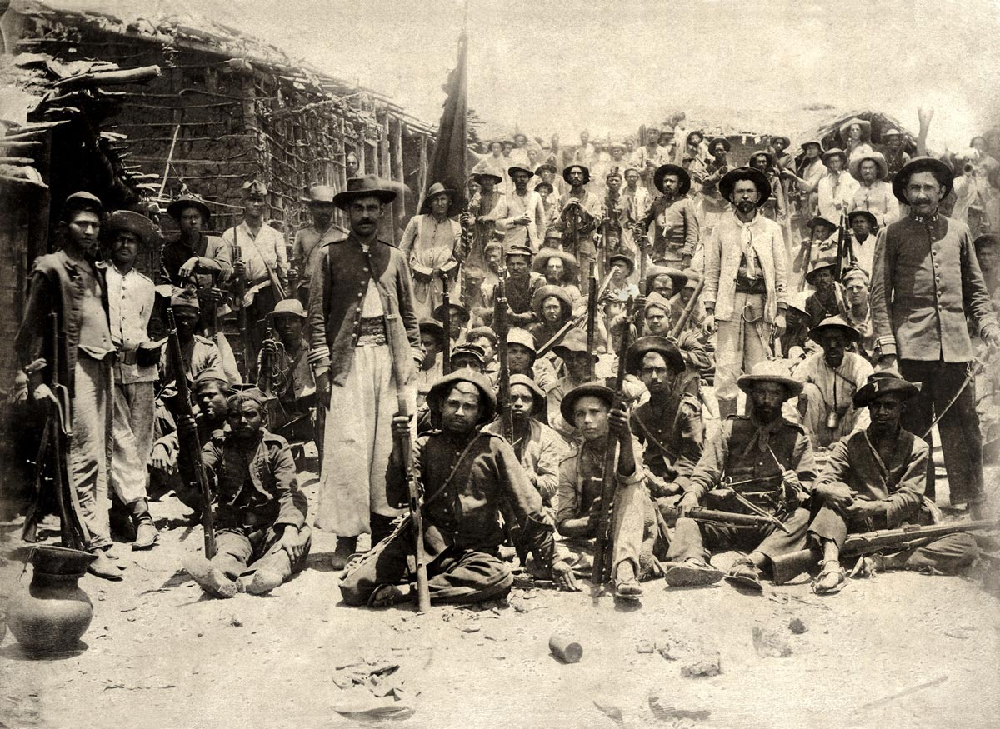
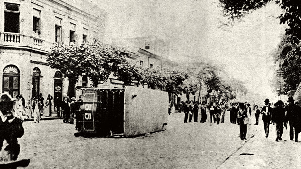

Aconteceram diversos conflitos após a Proclamação da República, desde pequenos conflitos, até guerras. A revolta da chibata, guerra dos canudos, a revolta da vacina são as mais conhecidas, e nos dias atuais, ainda existem pessoas que não tem conhecimento desses acontecimentos. Sem falar das políticas atuais que na verdade são super desatualizadas!
|  | Guerra de Canudos! A guerra entre o exército brasileiro e os seguidores do beato Antônio Conselheiro. |
|---|
|  | Revolta da vacina! Foram apenas cinco dias, mas marcaram a história da saúde pública no Brasil. |
|---|